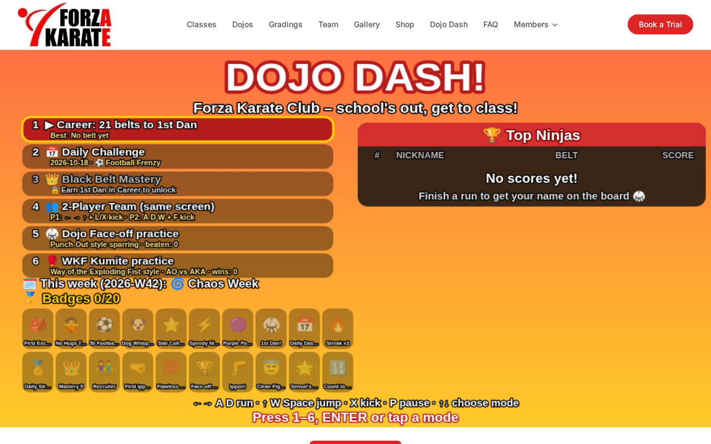
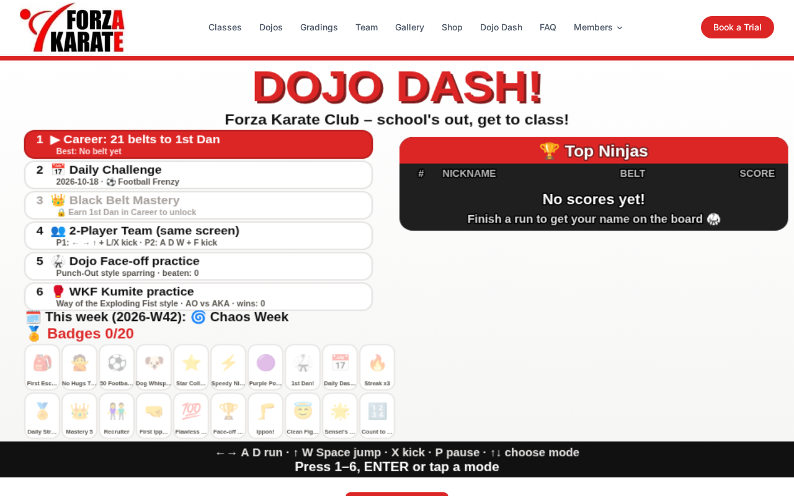
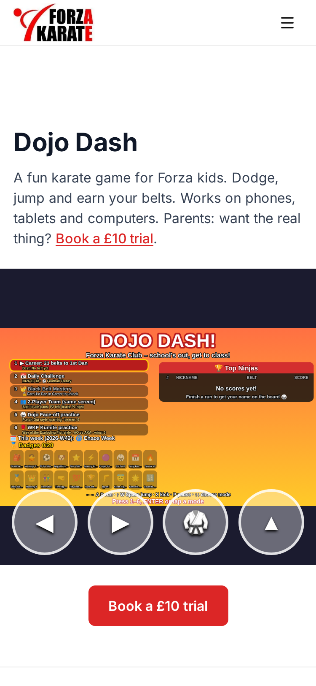
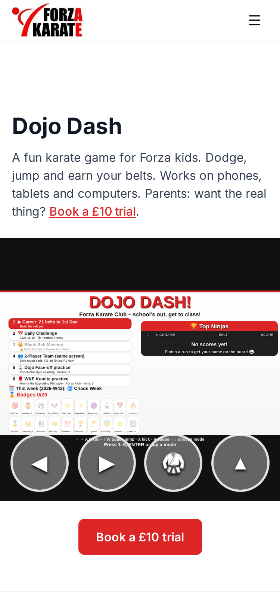

The orange and yellow menu is now Forza red, white and charcoal, to match the rest of the website. Gameplay, levels and characters are unchanged.
▶ Play the preview full screen
Before

After

Before

After
